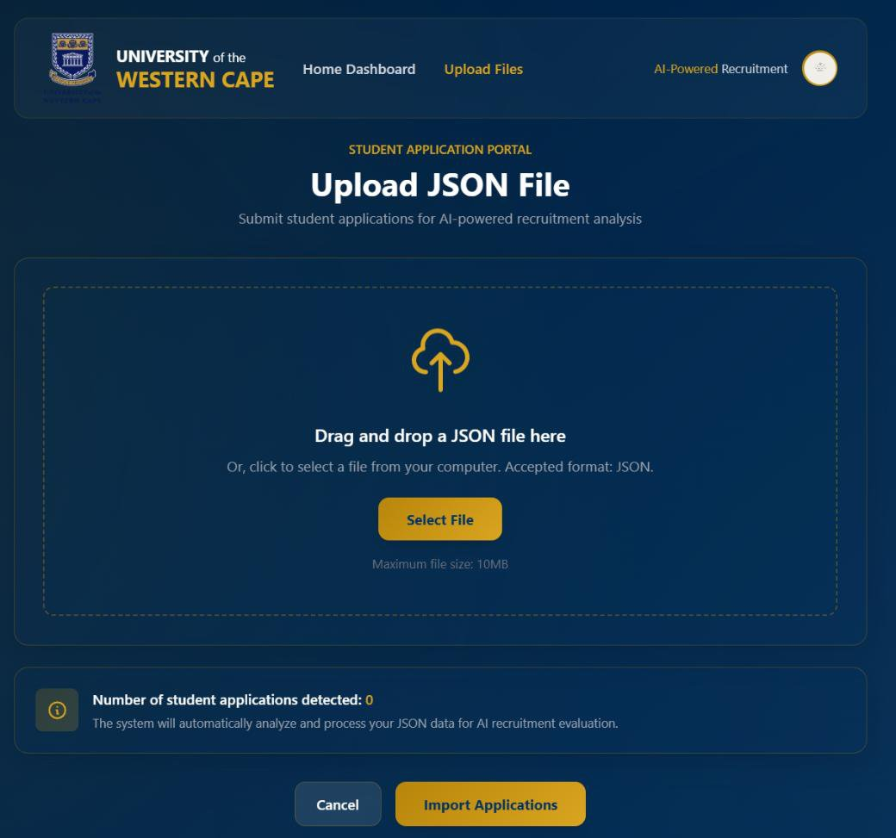
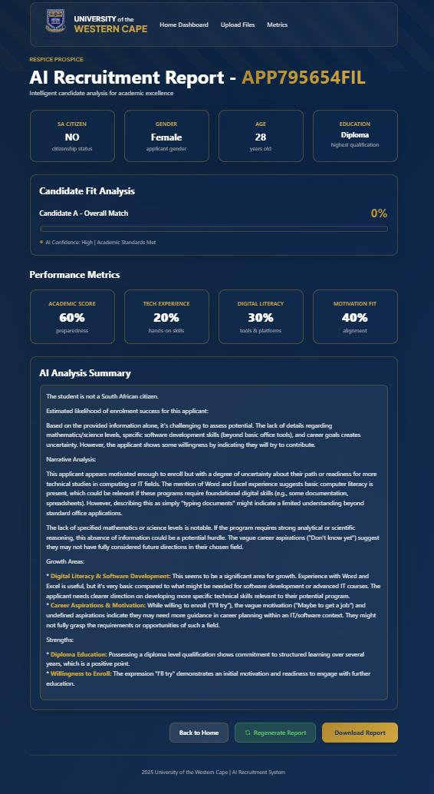
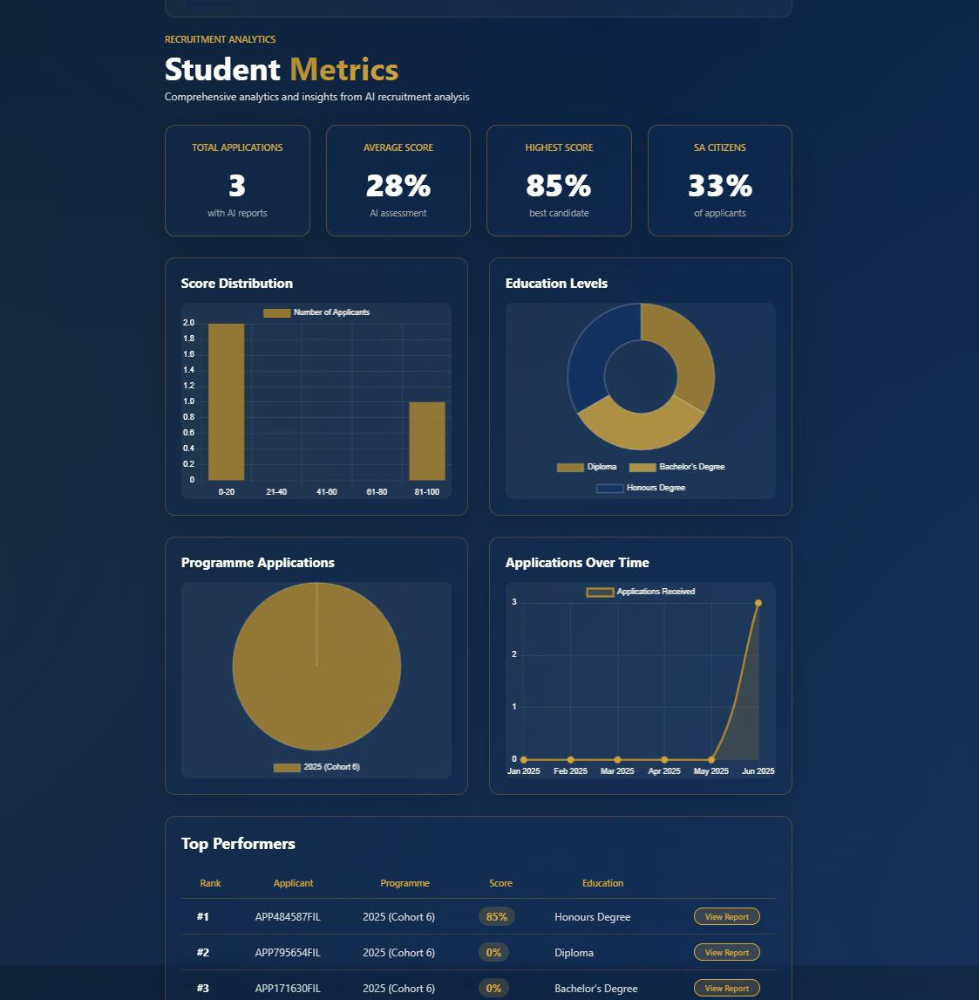

Het probleemThe problem
De UWC Future-Innovation Lab werkt met een applicant-flow die zich uitspreidt over losse Google Sheets, handmatige rapporten en een historisch dataset van vier jaar dat op de universiteitsservers verstopt zit. Ongeveer 1.700 sollicitaties per jaar, ~40 actieve studenten. De vraag van de klant (Wouter Grove): kunnen we die data samenbrengen, er zinnige metrics uit trekken, en per sollicitant een uitlegbaar "success score" genereren dat zowel de programma-afwerking als de post-programme uitkomst voorspelt — én dat transparant genoeg is om selectie-beslissingen mee te onderbouwen zonder over privacy heen te lopen?The UWC Future-Innovation Lab runs an applicant flow spread across separate Google Sheets, manual reports, and four years of historical data buried on the university's servers. Roughly 1,700 applications per year, ~40 active students. The client's ask (Wouter Grove): can we centralise that data, pull meaningful metrics out of it, and generate an explainable "success score" per applicant that predicts both programme completion and post-programme outcomes — transparent enough to justify selection decisions without trampling privacy?
De aanpakThe approach
Vierlagen-architectuurFour-layer architecture
Het platform bestaat uit vier duidelijk afgebakende lagen:The platform is built in four clearly bounded layers:
- Web-frontend (vanilla HTML/CSS/JS met glassmorphism op UWC's huismerk-kleuren — donker cobalt
#003366met goud#DAA520) — login, applicant management, JSON-upload, metrics-dashboard, en individuele AI-report pagina.Web frontend (vanilla HTML/CSS/JS with glassmorphism on UWC's brand palette — deep cobalt#003366with gold#DAA520) — login, applicant management, JSON upload, metrics dashboard, and per-candidate AI report page. - ASP.NET Core 9 backend — controllers voor auth en applicant-CRUD, services voor AI-reporting en metrics, repositories tegen Cosmos DB, en Docker Compose voor local development.ASP.NET Core 9 backend — controllers for auth and applicant CRUD, services for AI reporting and metrics, repositories against Cosmos DB, and Docker Compose for local development.
- Azure Cosmos DB — twee containers (
ApplicantsenAIReports), gestructureerde JSON-storage voor de sollicitatiedata en de gegenereerde rapporten, zodat elk rapport later heropgehaald of geregenereerd kan worden.Azure Cosmos DB — two containers (ApplicantsandAIReports), structured JSON storage for the application data and the generated reports, so each report can be re-fetched or regenerated later. - Lokale AI-laag via Ollama — twee modellen, elk voor een ander doel (zie hieronder). Bewust lokaal en niet cloud, zodat sollicitantendata het lab niet hoeft te verlaten voor de LLM-analyse.Local AI layer via Ollama — two models, each for a distinct purpose (see below). Deliberately local, not cloud, so applicant data never has to leave the lab for the LLM analysis.

De twee AI-stappenThe two AI stages
Elk report card wordt in twee stappen samengesteld, met twee verschillende lokale modellen — elk voor wat het goed doet:Each report card is assembled in two steps, using two different local models — each for what it's good at:
- Gemma 3 — draait bij het openen van het report en levert een motivation analysis plus drie extra performance-metrics (academic score, tech experience, digital literacy, motivation fit). Kort, gestructureerd, sneller dan de zware analyse. Dat maakt de eerste render van het report snel.Gemma 3 — runs when the report opens and produces a motivation analysis plus three additional performance metrics (academic score, tech experience, digital literacy, motivation fit). Short, structured, faster than the heavy analysis. Keeps the first render of the report snappy.
- DeepSeek-R1 (via een RAG-pipeline over ChromaDB) — genereert de eigenlijke Candidate Fit Analysis: een probabiliteitsscore voor slagen, een narratieve analyse van de sterktes en groeidomeinen, en een concrete uitleg waarom die score zo is. Retrieval-augmented, want de klant vroeg expliciet om uitlegbaarheid — de LLM moet z'n conclusie kunnen onderbouwen met de eigen tekst-antwoorden van de kandidaat.DeepSeek-R1 (via a RAG pipeline over ChromaDB) — generates the actual Candidate Fit Analysis: a pass probability score, a narrative analysis of strengths and growth areas, and a concrete explanation of why the score came out that way. Retrieval-augmented because the client explicitly asked for explainability — the LLM has to justify its conclusion using the candidate's own text answers.
Twaalf velden uit de sollicitatiedata bleken (na verkennende modelering) de sterkste voorspellende waarde te hebben: burgerschap, hoogste kwalificatie, hoogste wiskunde-niveau, hoogste wetenschap-niveau, software development-ervaring, digitale geletterdheid, motivatie-verklaring, carrière-aspiraties, full-time-beschikbaarheid, leeftijd, geslacht, en de open-text velden. Tekstvelden gaan door de embedding-pipeline naar ChromaDB; categorische en numerieke velden worden one-hot encoded of geschaald voor de scoring-fase.Twelve fields from the application data turned out (after exploratory modelling) to carry the strongest predictive weight: citizenship, highest qualification, highest maths level, highest science level, software development experience, digital literacy, motivation statement, career aspirations, full-time availability, age, gender, and the open-text fields. Text fields go through the embedding pipeline into ChromaDB; categorical and numeric fields are one-hot encoded or scaled for the scoring stage.

Metrics + cohort-vergelijkingMetrics + cohort comparison
Naast de individuele report cards levert een aparte Student Metrics dashboard hoog-niveau inzichten: total applications, gemiddelde en hoogste AI-score, percentage SA citizens, score distribution, education levels, programme applications per cohort, en applications over time. De cohort-filter is er expliciet in gezet omdat de klant tijdens meeting 2 vroeg om visuals die groepen kunnen vergelijken — belangrijk voor het aantonen van de programma-impact aan de universiteit en aan financiers.Beyond individual report cards, a separate Student Metrics dashboard delivers high-level insight: total applications, average and highest AI score, percentage SA citizens, score distribution, education levels, programme applications per cohort, and applications over time. The cohort filter was added explicitly because the client asked in meeting 2 for visuals that could compare groups — important for showing programme impact to the university and funders.

Werkproces met de klantWorking with the client
Vijf geplande client-meetings met Wouter Grove en Frederik. Meeting 1 legde de scope en de tech-stack vast (C#/.NET/Azure, GDPR verplicht bij elke stap). Meeting 2 lockte de expliciete eis van uitlegbaarheid en cohort-filters. Meeting 3 clarifieerde de data-dictionary (wat betekent bijvoorbeeld het "DSI final mark"?). Meeting 4 gaf approval op de JSON-upload flow en de MVP metrics-lijst. Meeting 5 kwam er niet, de klant reageerde niet meer — we hebben het eindresultaat via e-mail bezorgd met een begeleidende doc.Five client meetings scheduled with Wouter Grove and Frederik. Meeting 1 locked scope and tech stack (C#/.NET/Azure, GDPR at every step). Meeting 2 locked the explicit requirement for explainability and cohort filters. Meeting 3 clarified the data dictionary (e.g. what "DSI final mark" actually means). Meeting 4 signed off the JSON upload flow and the MVP metrics list. Meeting 5 never happened — the client stopped responding, so we delivered the final project by email with an accompanying document.
Het resultaatThe result
Een werkende prototype-deployment die het volledige applicant-lifecycle afdekt: JSON-upload → Cosmos-storage → AI-scoring in twee stappen → dashboards + downloadable report cards. Elke rapport-generatie is idempotent (regenerate verwijdert de oude entry en schrijft een nieuwe, zodat de dataset consistent blijft). Client-feedback in meeting 4: “didn't have any remarks or things to change, satisfied with progress”. Later friends-and-family testing bevestigde dat de UI intuïtief was, met wat model-latency op piekmomenten als voornaamste UX-punt — dat had UWC's Azure-subscription kunnen fixen, maar die was nog niet operationeel toen we opleverden.A working prototype deployment covering the full applicant lifecycle: JSON upload → Cosmos storage → two-stage AI scoring → dashboards + downloadable report cards. Every report generation is idempotent (regenerate deletes the old entry and writes a new one, keeping the dataset consistent). Client feedback in meeting 4: "didn't have any remarks or things to change, satisfied with progress". Later friends-and-family testing confirmed the UI was intuitive, with model latency at peak moments as the main UX pain point — that would have been fixed by UWC's Azure subscription, but it wasn't provisioned in time for delivery.
Wat ik geleerd hebWhat I learned
Uitlegbaarheid is geen extraatje, het is de opdracht. Bij een client die letterlijk moet kunnen verantwoorden waarom kandidaat A boven kandidaat B werd verkozen, is een score-getal zonder onderbouwing onbruikbaar. Dat sturde de keuze voor DeepSeek-R1 met RAG in plaats van een classic ML-classifier: het rapport moet argumenteren, niet alleen scoren. Elke architectuurbeslissing die daarmee botste (bv. een sneller model dat geen coherent verhaal genereert) verloor het van de eis.Explainability isn't an add-on, it's the brief. With a client that literally has to justify why candidate A was picked over candidate B, a bare score without reasoning is useless. That drove the choice for DeepSeek-R1 with RAG over a classic ML classifier: the report has to argue, not just score. Every architectural decision that clashed with that requirement (e.g. a faster model that couldn't produce a coherent narrative) lost against it.
Twee modellen, twee rollen. De keuze om Gemma 3 en DeepSeek-R1 naast elkaar te draaien in plaats van één model voor alles was in eerste instantie een performance-truc, maar bleek een architecturaal patroon: gebruik een klein en snel model voor de dingen die tijdens het openen van de pagina moeten gebeuren, gebruik een zwaar model voor de dingen waar de kwaliteit echt telt. Same LLM-ecosysteem (Ollama), verschillende gewichtsklassen.Two models, two roles. The choice to run Gemma 3 and DeepSeek-R1 side by side rather than one model for everything started as a performance trick but turned out to be a real architectural pattern: use a small, fast model for the things that have to happen when the page opens, use a heavy model for the things where quality actually matters. Same LLM ecosystem (Ollama), different weight classes.
Client-cadans bepaalt scope. De vijf meetings waren zowel een deadline-generator als een scope-anker. Elke meeting had één beslissing die daarna vast lag: tech stack, uitlegbaarheids-eis, data-definities, MVP-metrics. Toen meeting 5 wegviel, hadden we al genoeg beslissingen om zelfstandig door te bouwen — maar het maakte ook duidelijk dat een team dat afhankelijk is van client-response een plan B voor go/no-go beslissingen nodig heeft.Client cadence sets scope. The five meetings were both a deadline generator and a scope anchor. Each meeting locked in one decision: tech stack, explainability requirement, data definitions, MVP metrics. When meeting 5 dropped off, we already had enough decisions to keep building — but it also made clear that a team dependent on client response needs a plan B for go/no-go decisions.
GDPR is een ontwerp-input, niet een compliance-checkbox. "Alle data blijft bij UWC" en "geen sollicitanten-data naar cloud-LLMs" waren geen constraints die achteraf werden toegevoegd — ze bepaalden vanaf dag één dat Ollama lokaal draaide, dat we niet naar OpenAI konden reiken voor snelheid, en dat de deployment-strategie een private VM was in plaats van een SaaS. Als je die keuze pas tijdens de review-fase maakt, moet je de helft van de architectuur herbouwen.GDPR is a design input, not a compliance checkbox. "All data stays with UWC" and "no applicant data goes to cloud LLMs" weren't constraints tacked on afterwards — they decided from day one that Ollama would run locally, that we couldn't reach for OpenAI for speed, and that the deployment strategy was a private VM rather than a SaaS. Make that call at review time instead of at design time, and you rebuild half of the architecture.